Cohort creation: before & after Actual application components captured with identical, explicit visual fixtures. Click any image for its full-page capture. Expand a screen to see the supplied design reference and current mobile view.
“Before” is the committed Phase 3 UI (33660b2). “After” is the current code. Pending screens are not claimed complete. These are isolated rendering fixtures with mocked commands/data reads, not live authenticated AI/database journeys. Next image/link wrappers and local production fonts are used. Content, available artwork and some controls differ from the reference; final visual fidelity review remains pending.
2 · Recommendations 3 · Starting point 4 · Material input 5 · Understanding 6 · Chunking 7 · Analyzing 8 · Ready 9 · Review 10 · Publication success 2. Recommendations Implemented; final fidelity review pending Reference viewport assumption: 1585 × 992 CSS px · checkpoint 4.1 · capture 2026-10-10 · code a40010d
Design reference and current mobile capture DESIGN REFERENCE Supplied 2.png — target, not “before” CURRENT MOBILE 390 × 844 viewport, full page 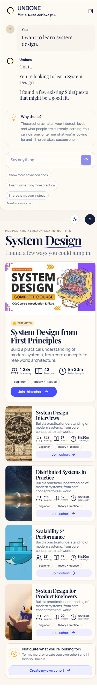
3. Starting point Implemented; final fidelity review pending Reference viewport assumption: 1585 × 992 CSS px · checkpoint 4.2 · capture 2026-10-10 · code a40010d
Design reference and current mobile capture DESIGN REFERENCE Supplied 3.png — target, not “before” CURRENT MOBILE 390 × 844 viewport, full page 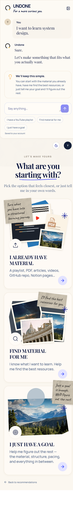
4. Material input Implemented; final fidelity review pending Reference viewport assumption: 1585 × 992 CSS px · checkpoint 4.3 · capture 2026-10-10 · code a40010d
Design reference and current mobile capture DESIGN REFERENCE Supplied 4.png — target, not “before” CURRENT MOBILE 390 × 844 viewport, full page 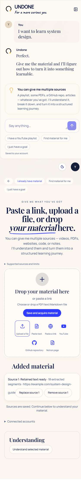
5. Understanding Implemented; final fidelity review pending Reference viewport assumption: 1585 × 992 CSS px · checkpoint 4.4 · capture 2026-10-10 · code a40010d
Design reference and current mobile capture DESIGN REFERENCE Supplied 5.png — target, not “before” CURRENT MOBILE 390 × 844 viewport, full page 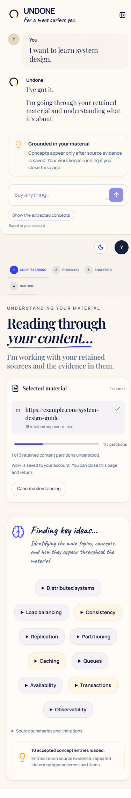
6. Chunking Implemented; final fidelity review pending Reference viewport assumption: 1586 × 992 CSS px · checkpoint 4.5 · capture 2026-10-10 · code a40010d
BEFORE Actual Phase 3 UI · 33660b2 AFTER / CURRENT Phase 4 implementation 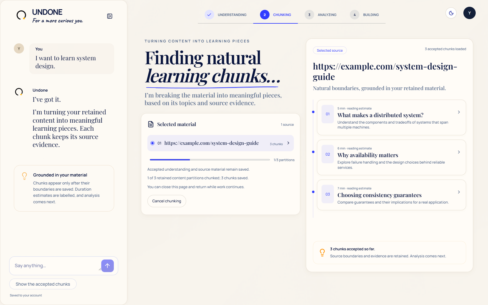
Design reference and current mobile capture DESIGN REFERENCE Supplied 6.png — target, not “before” CURRENT MOBILE 390 × 844 viewport, full page 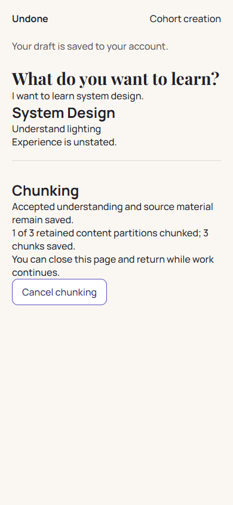
7. Analyzing Implemented; final fidelity review pending Reference viewport assumption: 1586 × 992 CSS px · checkpoint 4.6 · capture 2026-10-10 · code 30f9537
Design reference and current mobile capture DESIGN REFERENCE Supplied 7.png — target, not “before” CURRENT MOBILE 390 × 844 viewport, full page 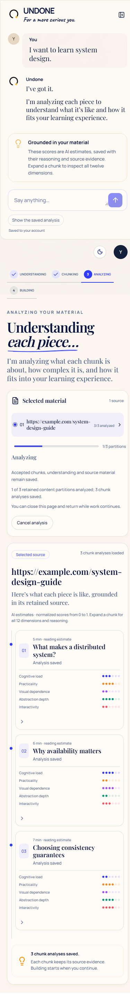
8. Ready Pending visual checkpoint Reference viewport assumption: 1584 × 993 CSS px · checkpoint 4.7 · capture 2026-10-10 · code a40010d
Design reference and current mobile capture DESIGN REFERENCE Supplied 8.png — target, not “before” CURRENT MOBILE 390 × 844 viewport, full page 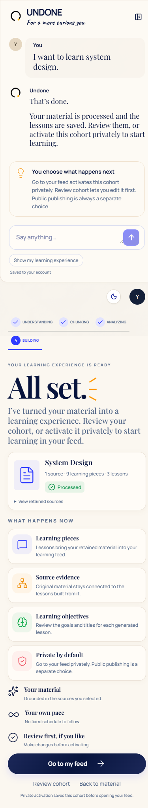
9. Review Pending visual checkpoint Reference viewport assumption: 1536 × 1024 CSS px · checkpoint 4.8 · capture 2026-10-10 · code a40010d
BEFORE Actual Phase 3 UI · 33660b2 AFTER / CURRENT Not restyled yet 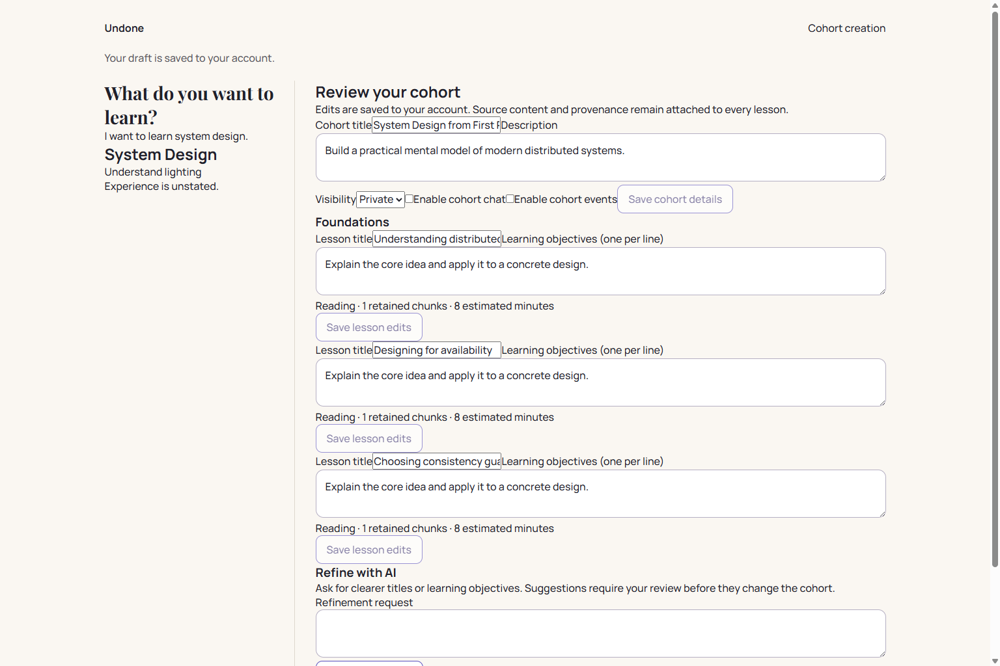
Design reference and current mobile capture DESIGN REFERENCE Supplied 9.png — target, not “before” CURRENT MOBILE 390 × 844 viewport, full page 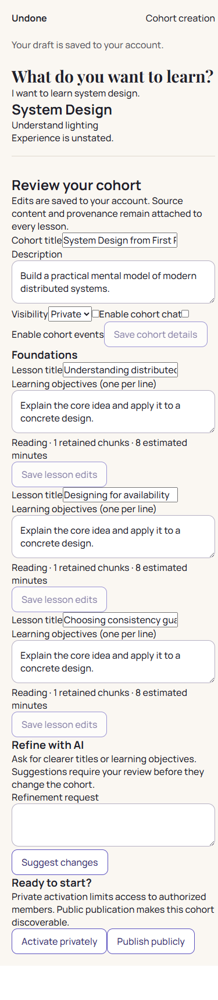
10. Publication success Pending visual checkpoint Reference viewport assumption: 1584 × 993 CSS px · checkpoint 4.9 · capture 2026-10-10 · code a40010d
BEFORE Actual Phase 3 UI · 33660b2 AFTER / CURRENT Not restyled yet 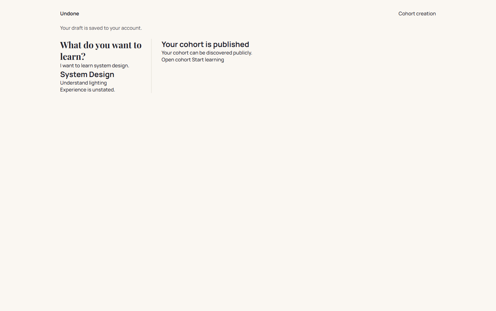
Design reference and current mobile capture DESIGN REFERENCE Supplied 10.png — target, not “before” CURRENT MOBILE 390 × 844 viewport, full page 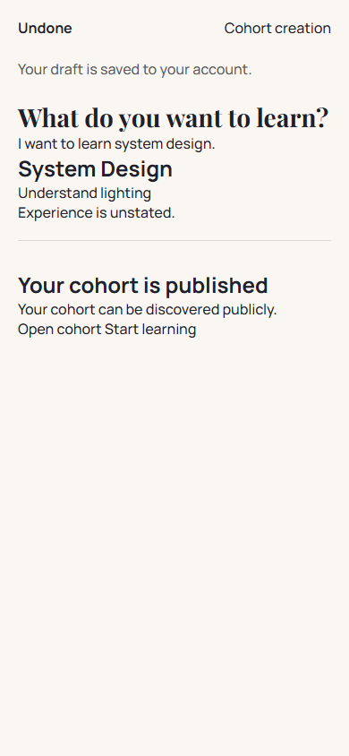
Generated from manifest.json. Update after each visual checkpoint with the documented capture commands.